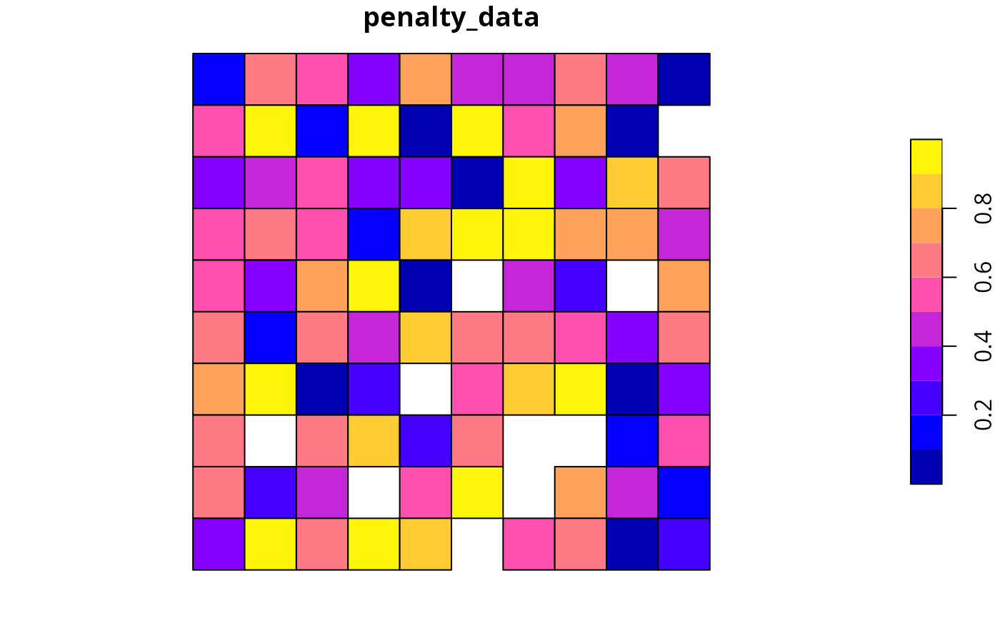
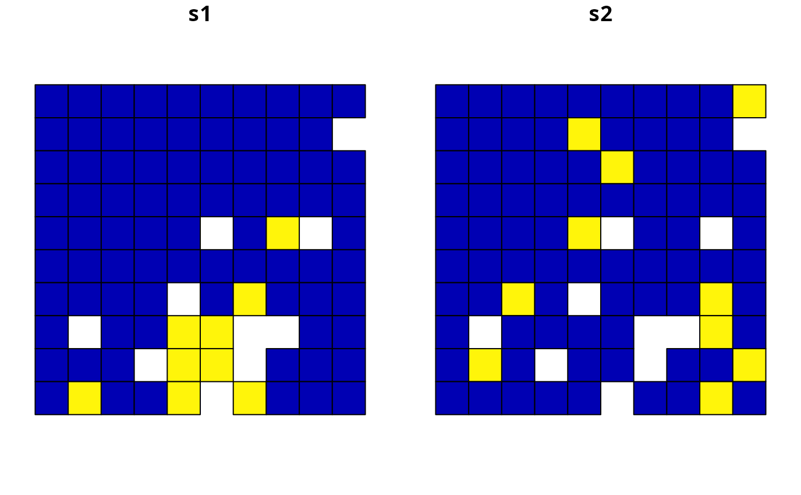

Add penalties to a conservation planning problem to penalize
solutions that select planning units with higher values from a specific
data source (e.g., anthropogenic impact). These penalties assume
a linear trade-off between the penalty values and the primary
objective of the conservation planning problem (e.g.,
solution cost for minimum set problems; add_min_set_objective().
Usage
# S4 method for class 'ConservationProblem,ANY,character'
add_linear_penalties(x, penalty, data)
# S4 method for class 'ConservationProblem,ANY,numeric'
add_linear_penalties(x, penalty, data)
# S4 method for class 'ConservationProblem,ANY,matrix'
add_linear_penalties(x, penalty, data)
# S4 method for class 'ConservationProblem,ANY,Matrix'
add_linear_penalties(x, penalty, data)
# S4 method for class 'ConservationProblem,ANY,Raster'
add_linear_penalties(x, penalty, data)
# S4 method for class 'ConservationProblem,ANY,SpatRaster'
add_linear_penalties(x, penalty, data)
# S4 method for class 'ConservationProblem,ANY,dgCMatrix'
add_linear_penalties(x, penalty, data)Arguments
- x
problem()object.- penalty
numericpenalty value that is used to scale the importance of not selecting planning units with highdatavalues. Higherpenaltyvalues can be used to obtain solutions that are strongly averse to selecting places with highdatavalues, and smallerpenaltyvalues can be used to obtain solutions that only avoid places with especially highdatavalues. Note that negativepenaltyvalues can be used to obtain solutions that prefer places with highdatavalues. Additionally, when adding these penalties to problems with multiple zones, the argument topenaltymust have a value for each zone.- data
character,numeric,terra::rast(),matrix, orMatrixobject containing the values used to penalize solutions. Planning units that are associated with higher data values are penalized more strongly in the solution. See the Data format section for more information.
Value
An updated problem() object with the penalties added to it.
Details
This function penalizes solutions that have higher values according to the sum of the penalty values associated with each planning unit, weighted by status of each planning unit in the solution.
Data format
The argument to data can be specified using the following formats.
dataascharactervectorcontaining column name(s) that contain penalty values for planning units. This format is only compatible if the planning units in the argument to
xare asf::sf()ordata.frameobject. The column(s) must havenumericvalues, and must not contain any missing (NA) values. For problems that contain a single zone, the argument todatamust contain a single column name. Otherwise, for problems that contain multiple zones, the argument todatamust contain a column name for each zone.dataas anumericvectorcontaining values for planning units. These values must not contain any missing (
NA) values. Note that this format is only available for planning units that contain a single zone.dataas amatrix/Matrixobjectcontaining
numericvalues that specify data for each planning unit. Each row corresponds to a planning unit, each column corresponds to a zone, and each cell indicates the data for penalizing a planning unit when it is allocated to a given zone.dataas aterra::rast()objectcontaining values for planning units. This format is only compatible if the planning units in the argument to
xaresf::sf(), orterra::rast()objects. If the planning unit data are asf::sf()object, then the values are calculated by overlaying the planning units with the argument todataand calculating the sum of the values associated with each planning unit. If the planning unit data are aterra::rast()object, then the values are calculated by extracting the cell values (note that the planning unit data and the argument todatamust have exactly the same dimensionality, extent, and missingness). For problems involving multiple zones, the argument todatamust contain a layer for each zone.
Mathematical formulation
The linear penalties are implemented using the following
equations.
Let \(I\) denote the set of planning units
(indexed by \(i\)), \(Z\) the set of management zones (indexed by
\(z\)), and \(X_{iz}\) the decision variable for allocating
planning unit \(i\) to zone \(z\) (e.g., with binary
values indicating if each planning unit is allocated or not). Also, let
\(P_z\) represent the penalty scaling value for zones
\(z \in Z\) (argument to penalty), and
\(D_{iz}\) the penalty data for allocating planning unit
\(i \in I\) to zones \(z \in Z\) (argument to
data, if supplied as a matrix object).
$$ \sum_{i}^{I} \sum_{z}^{Z} P_z \times D_{iz} \times X_{iz} $$
Note that when the problem objective is to maximize some measure of benefit and not minimize some measure of cost, the term \(P_z\) is replaced with \(-P_z\).
See also
See penalties for an overview of all functions for adding penalties.
Also, see calibrate_cohon_penalty() for assistance with selecting
an appropriate penalty value.
Other functions for adding penalties:
add_asym_connectivity_penalties(),
add_boundary_penalties(),
add_connectivity_penalties(),
add_feature_weights(),
add_neighbor_penalties()
Examples
# \dontrun{
# set seed for reproducibility
set.seed(600)
# load data
sim_pu_polygons <- get_sim_pu_polygons()
sim_features <- get_sim_features()
sim_zones_pu_raster <- get_sim_zones_pu_raster()
sim_zones_features <- get_sim_zones_features()
# add a column to contain the penalty data for each planning unit
# e.g., these values could indicate the level of habitat
sim_pu_polygons$penalty_data <- runif(nrow(sim_pu_polygons))
# plot the penalty data to visualise its spatial distribution
plot(sim_pu_polygons[, "penalty_data"], axes = FALSE)

# create minimal problem with minimum set objective,
# this does not use the penalty data
p1 <-
problem(sim_pu_polygons, sim_features, cost_column = "cost") %>%
add_min_set_objective() %>%
add_relative_targets(0.1) %>%
add_binary_decisions() %>%
add_default_solver(verbose = FALSE)
# print problem
print(p1)
#> A conservation problem (<ConservationProblem>)
#> ├•data
#> │├•features: "feature_1", "feature_2", "feature_3", "feature_4", and "feature_5" (5 total)
#> │└•planning units:
#> │ ├•data: <sf> (90 total)
#> │ ├•costs: continuous values (between 190.1328 and 215.8638)
#> │ ├•extent: 0, 0, 1, 1 (xmin, ymin, xmax, ymax)
#> │ └•CRS: Undefined Cartesian SRS (projected)
#> ├•formulation
#> │├•objective: minimum set objective
#> │├•penalties: none specified
#> │├•features:
#> ││├•targets: relative targets (all equal to 0.1)
#> ││└•weights: none specified
#> │├•constraints: none specified
#> │└•decisions: binary decision
#> └•optimization
#> ├•portfolio: default portfolio
#> └•solver: gurobi solver (`gap` = 0.1, `time_limit` = 2147483647, `first_feasible` = FALSE, …)
#> # ℹ Use `summary(...)` to see complete formulation.
# create an updated version of the previous problem,
# with the penalties added to it
p2 <- p1 %>% add_linear_penalties(100, data = "penalty_data")
# print problem
print(p2)
#> A conservation problem (<ConservationProblem>)
#> ├•data
#> │├•features: "feature_1", "feature_2", "feature_3", "feature_4", and "feature_5" (5 total)
#> │└•planning units:
#> │ ├•data: <sf> (90 total)
#> │ ├•costs: continuous values (between 190.1328 and 215.8638)
#> │ ├•extent: 0, 0, 1, 1 (xmin, ymin, xmax, ymax)
#> │ └•CRS: Undefined Cartesian SRS (projected)
#> ├•formulation
#> │├•objective: minimum set objective
#> │├•penalties:
#> ││└•1: linear penalties (`penalty` = 100, …)
#> │├•features:
#> ││├•targets: relative targets (all equal to 0.1)
#> ││└•weights: none specified
#> │├•constraints: none specified
#> │└•decisions: binary decision
#> └•optimization
#> ├•portfolio: default portfolio
#> └•solver: gurobi solver (`gap` = 0.1, `time_limit` = 2147483647, `first_feasible` = FALSE, …)
#> # ℹ Use `summary(...)` to see complete formulation.
# solve the two problems
s1 <- solve(p1)
#> Error: Error 10009: HostID mismatch (licensed to 2890c3bc, hostid is d03f011a)
#> Timing stopped at: 0.003 0 0.012
s2 <- solve(p2)
#> Error: Error 10009: HostID mismatch (licensed to 2890c3bc, hostid is d03f011a)
#> Timing stopped at: 0.002 0.001 0.014
# create a new object with both solutions
s3 <- sf::st_sf(
tibble::tibble(
s1 = s1$solution_1,
s2 = s2$solution_1
),
geometry = sf::st_geometry(s1)
)
#> Error: object 's1' not found
# plot the solutions and compare them,
# since we supplied a very high penalty value (i.e., 100), relative
# to the range of values in the penalty data and the objective function,
# the solution in s2 is very sensitive to values in the penalty data
plot(s3, axes = FALSE)
#> Error in h(simpleError(msg, call)): error in evaluating the argument 'x' in selecting a method for function 'plot': object 's3' not found
# for real conservation planning exercises,
# it would be worth exploring a range of penalty values (e.g., ranging
# from 1 to 100 increments of 5) to explore the trade-offs
# now, let's examine a conservation planning exercise involving multiple
# management zones
# create targets for each feature within each zone,
# these targets indicate that each zone needs to represent 10% of the
# spatial distribution of each feature
targ <- matrix(
0.1, ncol = number_of_zones(sim_zones_features),
nrow = number_of_features(sim_zones_features)
)
# create penalty data for allocating each planning unit to each zone,
# these data will be generated by simulating values
penalty_raster <- simulate_cost(
sim_zones_pu_raster[[1]],
n = number_of_zones(sim_zones_features)
)
# plot the penalty data, each layer corresponds to a different zone
plot(penalty_raster, main = "penalty data", axes = FALSE)

# create a multi-zone problem with the minimum set objective
# and penalties for allocating planning units to each zone,
# with a penalty scaling factor of 1 for each zone
p4 <-
problem(sim_zones_pu_raster, sim_zones_features) %>%
add_min_set_objective() %>%
add_relative_targets(targ) %>%
add_linear_penalties(c(1, 1, 1), penalty_raster) %>%
add_binary_decisions() %>%
add_default_solver(verbose = FALSE)
# print problem
print(p4)
#> A conservation problem (<ConservationProblem>)
#> ├•data
#> │├•zones: "zone_1", "zone_2", and "zone_3" (3 total)
#> │├•features: "feature_1", "feature_2", "feature_3", "feature_4", and "feature_5" (5 total)
#> │└•planning units:
#> │ ├•data: <SpatRaster> (90 total)
#> │ ├•costs: continuous values (between 182.6017 and 224.8492)
#> │ ├•extent: 0, 0, 1, 1 (xmin, ymin, xmax, ymax)
#> │ └•CRS: Undefined Cartesian SRS (projected)
#> ├•formulation
#> │├•objective: minimum set objective
#> │├•penalties:
#> ││└•1: linear penalties (`penalty` = 1, 1, and 1, …)
#> │├•features:
#> ││├•targets: relative targets (all equal to 0.1)
#> ││└•weights: none specified
#> │├•constraints: none specified
#> │└•decisions: binary decision
#> └•optimization
#> ├•portfolio: default portfolio
#> └•solver: gurobi solver (`gap` = 0.1, `time_limit` = 2147483647, `first_feasible` = FALSE, …)
#> # ℹ Use `summary(...)` to see complete formulation.
# solve problem
s4 <- solve(p4)
#> Error: Error 10009: HostID mismatch (licensed to 2890c3bc, hostid is d03f011a)
#> Timing stopped at: 0.002 0.001 0.013
# plot solution
plot(category_layer(s4), main = "multi-zone solution", axes = FALSE)
#> Error in (function (cond) .Internal(C_tryCatchHelper(addr, 1L, cond)))(structure(list(message = c(i = "In argument to `x`."), trace = structure(list(call = list(base::tryCatch(base::withCallingHandlers({ NULL base::saveRDS(base::do.call(base::do.call, base::c(base::readRDS("/tmp/Rtmp3PZNI5/callr-fun-512f27d8719f9"), base::list(envir = .GlobalEnv, quote = TRUE)), envir = .GlobalEnv, quote = TRUE), file = "/tmp/Rtmp3PZNI5/callr-res-512f257a0de91", compress = FALSE) base::flush(base::stdout()) base::flush(base::stderr()) NULL base::invisible() }, error = function(e) { { callr_data <- base::as.environment("tools:callr")$`__callr_data__` err <- callr_data$err if (FALSE) { base::assign(".Traceback", base::.traceback(4), envir = callr_data) utils::dump.frames("__callr_dump__") base::assign(".Last.dump", .GlobalEnv$`__callr_dump__`, envir = callr_data) base::rm("__callr_dump__", envir = .GlobalEnv) } e <- err$process_call(e) e2 <- err$new_error("error in callr subprocess") class <- base::class class(e2) <- base::c("callr_remote_error", class(e2)) e2 <- err$add_trace_back(e2) cut <- base::which(e2$trace$scope == "global")[1] if (!base::is.na(cut)) { e2$trace <- e2$trace[-(1:cut), ] } base::saveRDS(base::list("error", e2, e), file = base::paste0("/tmp/Rtmp3PZNI5/callr-res-512f257a0de91", ".error")) } }, interrupt = function(e) { { callr_data <- base::as.environment("tools:callr")$`__callr_data__` err <- callr_data$err if (FALSE) { base::assign(".Traceback", base::.traceback(4), envir = callr_data) utils::dump.frames("__callr_dump__") base::assign(".Last.dump", .GlobalEnv$`__callr_dump__`, envir = callr_data) base::rm("__callr_dump__", envir = .GlobalEnv) } e <- err$process_call(e) e2 <- err$new_error("error in callr subprocess") class <- base::class class(e2) <- base::c("callr_remote_error", class(e2)) e2 <- err$add_trace_back(e2) cut <- base::which(e2$trace$scope == "global")[1] if (!base::is.na(cut)) { e2$trace <- e2$trace[-(1:cut), ] } base::saveRDS(base::list("error", e2, e), file = base::paste0("/tmp/Rtmp3PZNI5/callr-res-512f257a0de91", ".error")) } }, callr_message = function(e) { base::try(base::signalCondition(e)) }), error = function(e) { NULL if (FALSE) { base::try(base::stop(e)) } else { base::invisible() } }, interrupt = function(e) { NULL if (FALSE) { e } else { base::invisible() } }), tryCatchList(expr, classes, parentenv, handlers), tryCatchOne(tryCatchList(expr, names[-nh], parentenv, handlers[-nh]), names[nh], parentenv, handlers[[nh]]), doTryCatch(return(expr), name, parentenv, handler), tryCatchList(expr, names[-nh], parentenv, handlers[-nh]), tryCatchOne(expr, names, parentenv, handlers[[1L]]), doTryCatch(return(expr), name, parentenv, handler), base::withCallingHandlers({ NULL base::saveRDS(base::do.call(base::do.call, base::c(base::readRDS("/tmp/Rtmp3PZNI5/callr-fun-512f27d8719f9"), base::list(envir = .GlobalEnv, quote = TRUE)), envir = .GlobalEnv, quote = TRUE), file = "/tmp/Rtmp3PZNI5/callr-res-512f257a0de91", compress = FALSE) base::flush(base::stdout()) base::flush(base::stderr()) NULL base::invisible() }, error = function(e) { { callr_data <- base::as.environment("tools:callr")$`__callr_data__` err <- callr_data$err if (FALSE) { base::assign(".Traceback", base::.traceback(4), envir = callr_data) utils::dump.frames("__callr_dump__") base::assign(".Last.dump", .GlobalEnv$`__callr_dump__`, envir = callr_data) base::rm("__callr_dump__", envir = .GlobalEnv) } e <- err$process_call(e) e2 <- err$new_error("error in callr subprocess") class <- base::class class(e2) <- base::c("callr_remote_error", class(e2)) e2 <- err$add_trace_back(e2) cut <- base::which(e2$trace$scope == "global")[1] if (!base::is.na(cut)) { e2$trace <- e2$trace[-(1:cut), ] } base::saveRDS(base::list("error", e2, e), file = base::paste0("/tmp/Rtmp3PZNI5/callr-res-512f257a0de91", ".error")) } }, interrupt = function(e) { { callr_data <- base::as.environment("tools:callr")$`__callr_data__` err <- callr_data$err if (FALSE) { base::assign(".Traceback", base::.traceback(4), envir = callr_data) utils::dump.frames("__callr_dump__") base::assign(".Last.dump", .GlobalEnv$`__callr_dump__`, envir = callr_data) base::rm("__callr_dump__", envir = .GlobalEnv) } e <- err$process_call(e) e2 <- err$new_error("error in callr subprocess") class <- base::class class(e2) <- base::c("callr_remote_error", class(e2)) e2 <- err$add_trace_back(e2) cut <- base::which(e2$trace$scope == "global")[1] if (!base::is.na(cut)) { e2$trace <- e2$trace[-(1:cut), ] } base::saveRDS(base::list("error", e2, e), file = base::paste0("/tmp/Rtmp3PZNI5/callr-res-512f257a0de91", ".error")) } }, callr_message = function(e) { base::try(base::signalCondition(e)) }), base::saveRDS(base::do.call(base::do.call, base::c(base::readRDS("/tmp/Rtmp3PZNI5/callr-fun-512f27d8719f9"), base::list(envir = .GlobalEnv, quote = TRUE)), envir = .GlobalEnv, quote = TRUE), file = "/tmp/Rtmp3PZNI5/callr-res-512f257a0de91", compress = FALSE), base::do.call(base::do.call, base::c(base::readRDS("/tmp/Rtmp3PZNI5/callr-fun-512f27d8719f9"), base::list(envir = .GlobalEnv, quote = TRUE)), envir = .GlobalEnv, quote = TRUE), `<fn>`(base::quote(`<fn>`), base::quote(`<named list>`), envir = base::quote(`<env>`), quote = base::quote(TRUE)), `<fn>`(pkg = base::quote(`<pkgdown>`), examples = base::quote(TRUE), run_dont_run = base::quote(TRUE), seed = base::quote(1014L), lazy = base::quote(TRUE), override = base::quote(`<list>`), install = base::quote(FALSE), preview = base::quote(FALSE), new_process = base::quote(FALSE), devel = base::quote(FALSE), quiet = base::quote(TRUE), cli_colors = base::quote(16777216L), hyperlinks = base::quote(FALSE)), pkgdown::build_site(...), build_site_local(pkg = pkg, examples = examples, run_dont_run = run_dont_run, seed = seed, lazy = lazy, override = override, preview = preview, devel = devel, quiet = quiet), build_reference(pkg, lazy = lazy, examples = examples, run_dont_run = run_dont_run, seed = seed, override = override, preview = FALSE, devel = devel), unwrap_purrr_error(purrr::map(topics, build_reference_topic, pkg = pkg, lazy = lazy, examples_env = examples_env, run_dont_run = run_dont_run)), withCallingHandlers(code, purrr_error_indexed = function(err) { cnd_signal(err$parent) }), purrr::map(topics, build_reference_topic, pkg = pkg, lazy = lazy, examples_env = examples_env, run_dont_run = run_dont_run), map_("list", .x, .f, ..., .progress = .progress), with_indexed_errors(i = i, names = names, error_call = .purrr_error_call, call_with_cleanup(map_impl, environment(), .type, .progress, n, names, i)), withCallingHandlers(expr, error = function(cnd) { if (i == 0L) { } else { message <- c(i = "In index: {i}.") if (!is.null(names) && !is.na(names[[i]]) && names[[i]] != "") { name <- names[[i]] message <- c(message, i = "With name: {name}.") } else { name <- NULL } cli::cli_abort(message, location = i, name = name, parent = cnd, call = error_call, class = "purrr_error_indexed") } }), call_with_cleanup(map_impl, environment(), .type, .progress, n, names, i), .f(.x[[i]], ...), withCallingHandlers(data_reference_topic(topic, pkg, examples_env = examples_env, run_dont_run = run_dont_run), error = function(err) { cli::cli_abort("Failed to parse Rd in {.file {topic$file_in}}", parent = err, call = quote(build_reference())) }), data_reference_topic(topic, pkg, examples_env = examples_env, run_dont_run = run_dont_run), run_examples(tags$tag_examples[[1]], env = if (is.null(examples_env)) NULL else new.env(parent = examples_env), topic = tools::file_path_sans_ext(topic$file_in), run_dont_run = run_dont_run), highlight_examples(code, topic, env = env), downlit::evaluate_and_highlight(code, fig_save = fig_save_topic, env = eval_env, output_handler = handler), evaluate::evaluate(code, child_env(env), new_device = TRUE, output_handler = output_handler), withRestarts(with_handlers({ for (expr in tle$exprs) { ev <- withVisible(eval(expr, envir)) watcher$capture_plot_and_output() watcher$print_value(ev$value, ev$visible, envir) } TRUE }, handlers), eval_continue = function() TRUE, eval_stop = function() FALSE), withRestartList(expr, restarts), withOneRestart(withRestartList(expr, restarts[-nr]), restarts[[nr]]), doWithOneRestart(return(expr), restart), withRestartList(expr, restarts[-nr]), withOneRestart(expr, restarts[[1L]]), doWithOneRestart(return(expr), restart), with_handlers({ for (expr in tle$exprs) { ev <- withVisible(eval(expr, envir)) watcher$capture_plot_and_output() watcher$print_value(ev$value, ev$visible, envir) } TRUE }, handlers), eval(call), eval(call), withCallingHandlers(code, message = `<fn>`, warning = `<fn>`, error = `<fn>`), withVisible(eval(expr, envir)), eval(expr, envir), eval(expr, envir), plot(category_layer(s4), main = "multi-zone solution", axes = FALSE), category_layer(s4), assert_required(x), cli::cli_abort(message = err_msg, parent = attr(res, "condition")$parent, call = call, .internal = .internal), rlang::abort(message, ..., call = call, use_cli_format = TRUE, .frame = .frame)), parent = c(0L, 1L, 2L, 3L, 2L, 5L, 6L, 0L, 0L, 0L, 0L, 0L, 12L, 13L, 14L, 15L, 16L, 15L, 18L, 19L, 20L, 19L, 19L, 23L, 23L, 25L, 26L, 27L, 28L, 29L, 30L, 31L, 32L, 31L, 34L, 35L, 29L, 37L, 38L, 37L, 29L, 29L, 42L, 43L, 43L, 45L, 46L, 47L), visible = c(TRUE, TRUE, TRUE, TRUE, TRUE, TRUE, TRUE, TRUE, TRUE, TRUE, TRUE, TRUE, TRUE, TRUE, TRUE, TRUE, TRUE, TRUE, TRUE, TRUE, TRUE, TRUE, TRUE, TRUE, TRUE, TRUE, TRUE, TRUE, TRUE, TRUE, TRUE, TRUE, TRUE, TRUE, TRUE, TRUE, TRUE, TRUE, TRUE, TRUE, TRUE, TRUE, TRUE, TRUE, TRUE, FALSE, FALSE, FALSE), namespace = c("base", "base", "base", "base", "base", "base", "base", "base", "base", "base", "base", NA, "pkgdown", "pkgdown", "pkgdown", "pkgdown", "base", "purrr", "purrr", "purrr", "base", "purrr", "pkgdown", "base", "pkgdown", "pkgdown", "pkgdown", "downlit", "evaluate", "base", "base", "base", "base", "base", "base", "base", "evaluate", "base", "base", "base", "base", "base", "base", "base", "prioritizr", "prioritizr", "cli", "rlang"), scope = c("::", "local", "local", "local", "local", "local", "local", "::", "::", "::", "local", "global", "::", ":::", "::", ":::", "::", "::", ":::", ":::", "::", ":::", "local", "::", ":::", ":::", ":::", "::", "::", "::", "local", "local", "local", "local", "local", "local", ":::", "::", "::", "::", "::", "::", "::", "::", "::", ":::", "::", "::"), error_frame = c(FALSE, FALSE, FALSE, FALSE, FALSE, FALSE, FALSE, FALSE, FALSE, FALSE, FALSE, FALSE, FALSE, FALSE, FALSE, FALSE, FALSE, FALSE, FALSE, FALSE, FALSE, FALSE, FALSE, FALSE, FALSE, FALSE, FALSE, FALSE, FALSE, FALSE, FALSE, FALSE, FALSE, FALSE, FALSE, FALSE, FALSE, FALSE, FALSE, FALSE, FALSE, FALSE, FALSE, FALSE, TRUE, FALSE, FALSE, FALSE)), row.names = c(NA, -48L), version = 2L, class = c("rlang_trace", "rlib_trace", "tbl", "data.frame")), parent = NULL, body = c("\033[1mCaused by error:\033[22m", `!` = "object 's4' not found"), rlang = list(inherit = TRUE), call = category_layer(s4), use_cli_format = TRUE), class = c("rlang_error", "error", "condition"))): error in evaluating the argument 'x' in selecting a method for function 'plot': ℹ In argument to `x`.
#> Caused by error:
#> ! object 's4' not found
# }